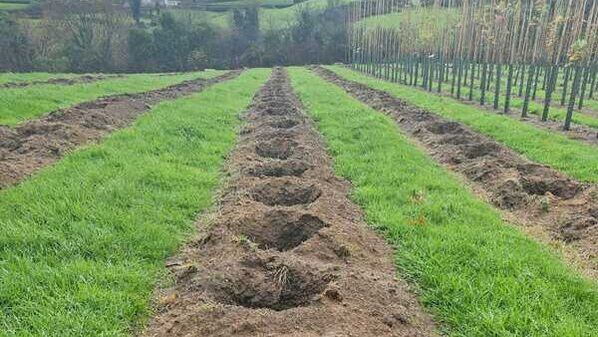
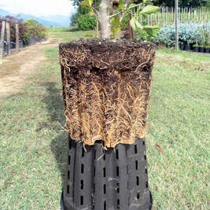
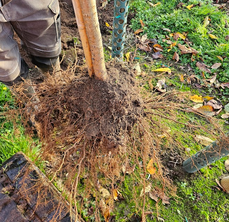

Our Growing Methods
Every tree that leaves Papervale starts with the right foundations: healthy roots, expert shaping and sustainable practices from the very first day.
Strong Roots
That's why we have chosen specially designed corrugated slotted pots for all of our container-grown trees.
These promote air pruning, which encourages the development of dense, fibrous root systems, essential for quick establishment and healthy growth when planted in the landscape.
When a root tip reaches the air at the side of the pot, it stops growing outward and new, finer roots are triggered instead. The result is a dense root ball that transplants with minimal shock and establishes far faster than conventionally potted stock.



How We Grow
From the pot they're planted in to the way we prune and feed, every decision is made with the long-term health of the tree in mind.
Custom corrugated slotted pots encourage dense, fibrous root systems by stopping circling roots at the air gap. Trees establish faster, suffer less transplant shock, and develop stronger anchoring roots.
Spring pruning promotes vigorous new growth. Summer tying ensures strong apical dominance and ideal stem taper. Together these techniques produce trees with well-balanced canopies and structural integrity.
Peat-free media, integrated pest management, green manure crops and low-input fertilisation: every method is chosen to produce healthier trees while protecting the land we grow on.
Shaping for Success
Good structure doesn't happen by chance. Every tree at Papervale goes through a careful programme of formative pruning and training, carried out at the right time of year to maximise results.
The goal is a tree that arrives in your landscape with the structural integrity to withstand the seasons for decades to come.
Carried out as the tree breaks dormancy, spring pruning channels the tree's energy into vigorous, directed new growth, establishing the form of the crown early in the season.
Leaders are tied to ensure strong apical dominance, keeping the tree growing upright with a single dominant stem and ideal taper from base to tip.
Lateral branches are managed throughout the growing season to produce a well-balanced, symmetrical canopy that is ready for life in the landscape from the moment it arrives.
Before any tree leaves the nursery, leaf chlorophyll content is measured as a non-invasive check of health and vitality, a measurable indicator of the plant's physiological condition.
Growing Sustainably
We're proud to lead with environmentally conscious practices at every stage, from the growing media we use to the way we manage pests, water and soil.
We committed to peat-free growing media from the very start, long before it became industry standard. Our carefully selected media blend produces exceptional root systems without damaging fragile wetland habitats.
Reduced chemical use through biological controls and targeted interventions. The result is a more balanced nursery ecosystem: resilient, healthier and less reliant on synthetic inputs.
Cover crops are grown between tree rows to fix nitrogen naturally, improve soil structure, and suppress weeds, reducing the need for artificial fertilisers and herbicides.
Innovative weed control and low-input fertilisation methods help us nurture healthier trees while protecting the land we grow on. By working with nature, we nurture a healthier planet.
"We don't grow trees for short-term impact. We grow legacies — trees that establish quickly, flourish for decades, and enhance the land they root in."
All our practices align with BS8545, the British Standard for nursery tree cultivation and planting in the landscape. It's not just a benchmark, it's our commitment to quality and long-term tree success.
BS8545 covers everything from how trees are grown and graded to how they should be planted and established. Buying BS8545-compliant stock gives you confidence that every tree has been produced to a consistently high standard.
We are Northern Ireland's first tree nursery to receive this certification. The UK & Ireland Sourcing Guarantee (UKISG) certifies that our trees are genuinely homegrown, not just imported and relabelled.
This ensures full traceability, strengthens biosecurity, and supports local horticulture. When you choose UKISG certified stock, you choose trust, quality and sustainability.
Browse our full range of homegrown, UKISG certified trees, then follow our tree selection guide and planting guide for expert support. Or get in touch to discuss your project requirements and trade pricing.